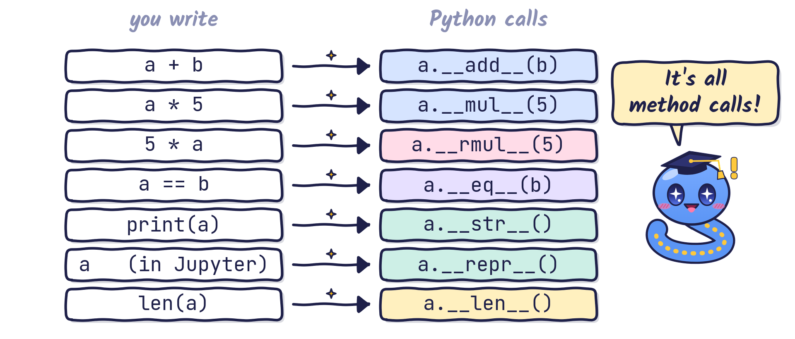
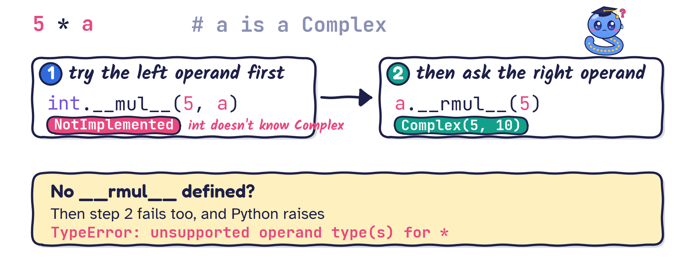

0 + 0*i
1 + 2*iSpecial (dunder) methods in Python
__init__(self, ...), the constructor.Some popular special methods:
| Magic method | Description |
|---|---|
__init__() |
initialises new objects (the constructor) |
__str__() |
human-readable representation of an object |
__repr__() |
developer-oriented representation |
__call__() |
makes instances of a class callable like functions |
__len__() |
supports the built-in len() function |
Here is how the official Python documentation defines special methods:
A method that is called implicitly by Python to execute a certain operation on a type, such as addition. Such methods have names starting and ending with double underscores. (Python glossary)

__init__()You have used it all along: __init__() works as an initialiser (constructor) because it gives initial values to the instance attributes of our classes.
print() show?What will print(a) show at this point?
__str__() returns a human-readable string representation of the object.
str() on the object.print() or format(), or put it in an f-string.__repr__() returns a string representation aimed at the developer.
repr() on the object.print().Let me illustrate the difference between
__str__()and__repr__()with a NumPy object.
str versus repr: a NumPy example__str__()Let us revisit our Complex class:
Now we can print a Complex number with print() or an f-string:
What do the two print calls show?
1 + 2*i
[<__main__.Complex object at 0x77ebb43555b0>, <__main__.Complex object at 0x77eb7e8eefd0>]print(a) uses __str__, but a list shows its items with repr(). We never defined __repr__, so we get the default text. Always define __repr__ (and __str__ if you want a friendlier version).
__repr__()Complex object:repr() directly; lists now display nicely too:a + b naively fails: the computer does not know how to add two Complex objects. We must teach it.--------------------------------------------------------------------------- TypeError Traceback (most recent call last) Cell In[12], line 3 1 a = Complex(1, 2) 2 b = Complex(2, 1) ----> 3 print(a + b) TypeError: unsupported operand type(s) for +: 'Complex' and 'Complex'
Arithmetic operators perform arithmetic operations on numeric values. Each has a supporting special method:
| Supporting method | Operator |
|---|---|
__add__(self, other) |
+ |
__sub__(self, other) |
- |
__mul__(self, other) |
* |
__truediv__(self, other) |
/ |
__floordiv__(self, other) |
// |
__mod__(self, other) |
% |
__pow__(self, other) |
** |
All these methods take a second argument, called other. In a + b, self is a (the left operand) and other is b (the right operand).
3
3class Complex:
def __init__(self, real=0, imag=0):
self.real = real; self.imag = imag
def __add__(self, other):
if not isinstance(other, type(self)):
raise TypeError("unsupported operand for +: "
+ f"{type(self).__name__} and {type(other).__name__}")
return Complex(self.real + other.real, self.imag + other.imag)
def __sub__(self, other):
if not isinstance(other, type(self)):
raise TypeError("unsupported operand for -: "
+ f"{type(self).__name__} and {type(other).__name__}")
return Complex(self.real - other.real, self.imag - other.imag)
def __str__(self): # kept short on purpose
return f"{self.real} + {self.imag}*i"a + b = 3 + 3*i
a - b = -1 + 1*i__repr__(self) in this class, so interactive mode still shows__repr__(self) to the class. That is your homework!--------------------------------------------------------------------------- TypeError Traceback (most recent call last) Cell In[18], line 2 1 a, b = Complex(1, 2), Complex(2, 3) ----> 2 print(a * b) TypeError: unsupported operand type(s) for *: 'Complex' and 'Complex'
from numbers import Real # Real covers int, float, ...
class Complex:
def __init__(self, real=0, imag=0):
self.real = real; self.imag = imag
def __mul__(self, other):
if isinstance(other, type(self)): # Complex * Complex
return Complex(self.real * other.real - self.imag * other.imag,
self.real * other.imag + self.imag * other.real)
if isinstance(other, Real): # Complex * number
return Complex(other * self.real, other * self.imag)
raise TypeError("unsupported operand for *: "
+ f"{type(self).__name__} and {type(other).__name__}")
def __str__(self):
return f"{self.real} + {self.imag}*i"a * b = 0 + 5*i
a * 5 = 5 + 10*i
a * 5.0 = 5.0 + 10.0*iComplex is still undefined. Here a is on the right of 5.0:5 * a
Complex object by a scalar written in front of it:__radd__(self, other).| Operator | Supporting method |
|---|---|
< |
__lt__(self, other) |
<= |
__le__(self, other) |
== |
__eq__(self, other) |
!= |
__ne__(self, other) |
>= |
__ge__(self, other) |
> |
__gt__(self, other) |
Complex objects we define “equal to” with __eq__(self, other) and “not equal to” with __ne__(self, other).class Complex:
# ... PREVIOUS CODE AS BEFORE ...
def __eq__(self, other):
if not isinstance(other, type(self)):
return NotImplemented # let Python handle other types
return self.real == other.real and self.imag == other.imag
def __ne__(self, other): # optional: Python derives != from __eq__
if not isinstance(other, type(self)):
return NotImplemented
return self.real != other.real or self.imag != other.imag__call__ lets an object be called like a function; __len__ supports len().
class Polynomial:
"""p(x) = c0 + c1 x + c2 x^2 + ..."""
def __init__(self, *coeffs):
self.coeffs = coeffs
def __call__(self, x): # p(x)
return sum(c * x**k for k, c in enumerate(self.coeffs))
def __len__(self): # len(p)
return len(self.coeffs)
def __repr__(self):
return f"Polynomial{self.coeffs}"
p = Polynomial(1, 0, 2) # p(x) = 1 + 2 x^2What are p(2), len(p) and p (typed on its own in Jupyter)?
a + b really means a.__add__(b).__str__ gives the friendly text for print(); __repr__ gives the developer view (and is used inside lists).__rmul__, __radd__, … handle the operand on the right.NotImplemented when your method cannot handle the other operand.__call__ and __len__ make your objects behave like functions and containers.